WhatsApp Center
Mulai v4.0.1 di OtomaX terdapat modul baru WA Center berguna agar Reseller dapat bertransaksi menggunakan aplikasi WhatsApp, info lengkap klik disini. Apabila Anda tertarik dengan fitur ini dan ingin membeli OtomaX silahkan klik disini stok unlimited.
Prasyarat
- Mempunyai akun WhatsApp aktif dan terhubung ke jaringan internet, baik menggunakan Handphone ataupun Emulator (misalnya MEmu, dapat diunduh dengan klik disini).
-
Telah menginstall beberapa software pendukung:
- Runtime .NET Framework v4.5 atau lebih tinggi, klik disini.
- Google Chrome, klik disini.
- Chrome Driver yang versinya sama dengan Google Chrome yang digunakan, klik disini.
- Selenium WebDriver, klik disini.
- Menggunakan OtomaX mulai v4.0.1; jika belum, lakukan update dahulu klik disini.
Pengaturan
Setelah prasyarat dilengkapi tibalah saat yang menegangkan yaitu mencoba WA Center.
-
Pilih modul WA Center -> klik kanan -> klik Tambah WA Center -> lalu lakukan sesuai petunjuk di
gambar bawah ini:
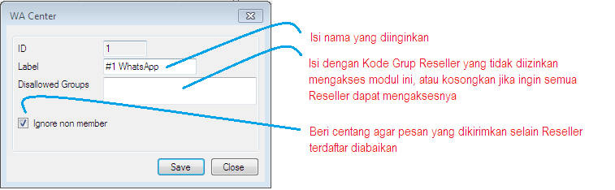
Pilih Setting -> Lain - lain -> key: WaAutoAllow pada nilai isi: 1.
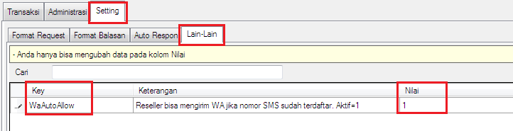
Dengan Nilai diisi: 1 seperti di atas semua nomor Reseller yang terdaftar di Administrasi -> Pengirim dengan Tipe: SMS otomatis dapat bertransaksi melalui WA Center.
-
Pilih modul WA Center yang baru dibuat -> klik kanan -> klik Aktifkan, di log modul akan muncul
seperti di bawah ini:
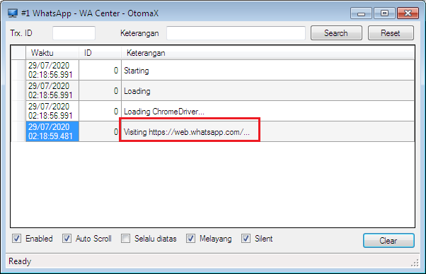
-
Tunggu beberapa saat proses menampilkan QR-Code.
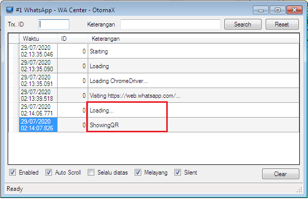
Selanjutnya akan muncul popup QR-Code.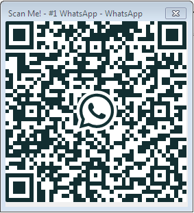
-
Scan QR-Code menggunakan Handphone atau emulator.
- Buka aplikasi WhatsApp di Handphone
-
Ketuk menu 3 titik bertumpuk di pojok kanan atas aplikasi WhatsApp dan pilih WhatsApp Web
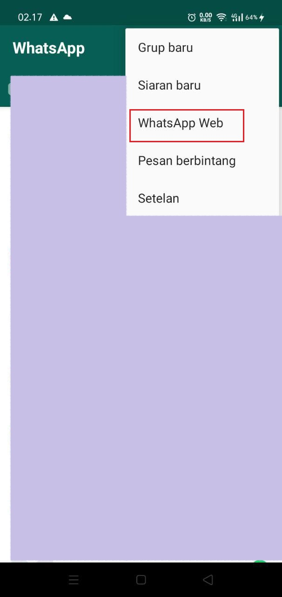
Jika muncul tampilan seperti di bawah klik tombol OKE
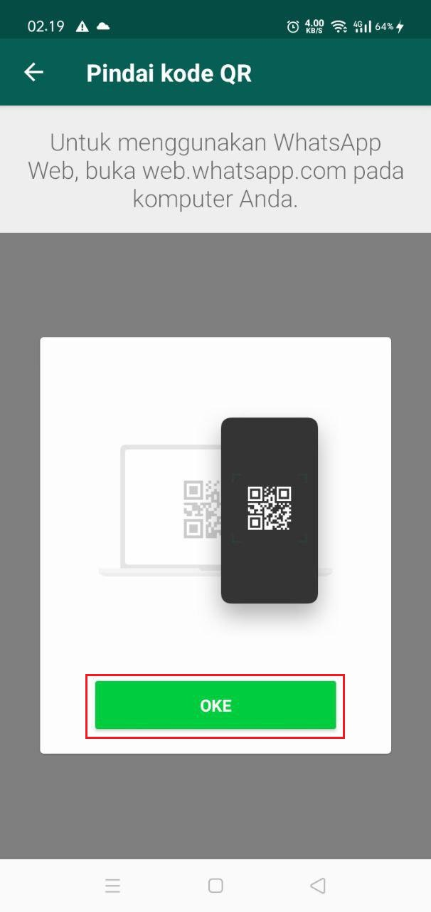
-
Arahkan kamera Handphone ke QR-Code yang berada di layar monitor komputer server OtomaX.
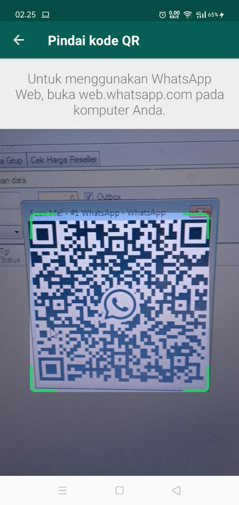
-
Tunggu beberapa saat proses integrasi. Jika di log modul dan aplikasi WhatsApp di Handphone muncul seperti di
bawah ini berarti WhatsApp Center OtomaX siap digunakan.
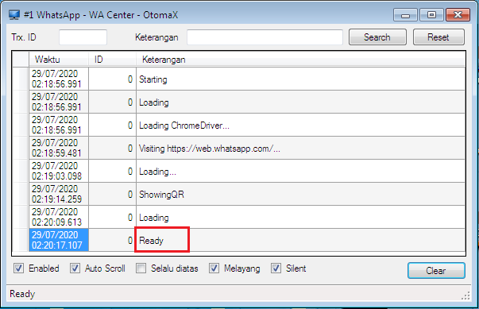
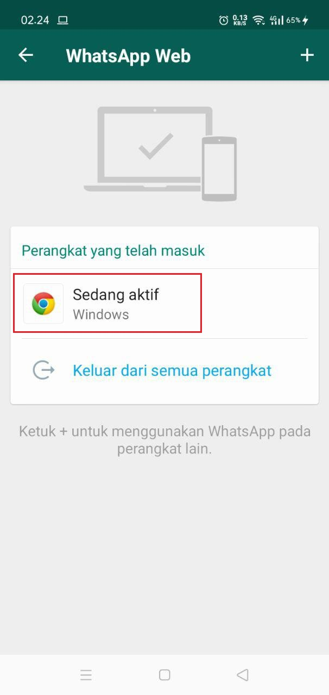
- Pengaturan selesai.
Sebagai tambahan informasi, terdapat format untuk menambah atau menghapus nomor WhatsApp di menu Setting -> Format Request -> key: TambahWA dan HapusWA sehingga Reseller Anda dapat menambah atau menghapus nomor WA-nya sendiri dengan menggunakan format tersebut, perhatikan gambar di bawah ini:
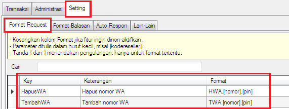
Selamat mencoba
Jika Anda memiliki pertanyaan atau gendala terkait WA Center silahkan kirimkan melalui email ke support@otomax-software.com.